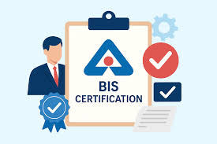

BIS Certification Support

End-to-end support for BIS certification including documentation, product testing coordination, and regulatory compliance assistance to help businesses meet Indian quality standards.
BIS Registration
BIS Registration is the process through which manufacturers and importers obtain approval from the Bureau of Indian Standards (BIS) to certify that their products conform to the prescribed Indian Standards. It is mandatory for products notified under Quality Control Orders (QCOs) issued by the Government of India.
Key Points About BIS Registration
- Authority: Bureau of Indian Standards (BIS), established under the BIS Act, 2016, serves as India’s national standards body.
- Purpose: Ensures product quality, safety, and reliability for consumers.
- Scope: Covers a wide range of products including electronics, IT goods, steel, cement, chemicals, packaged drinking water, and gold jewellery (hallmarking).
- Mark of Compliance: Registered products carry the ISI Mark or Standard Mark indicating conformity with Indian Standards.
BIS Certification Services
- ISI Mark Certification – Certification for products that fall under mandatory Indian Standards.
- Compulsory Registration Scheme (CRS) – Mandatory registration for electronics and IT goods before they can be sold in India.
- Hallmarking Scheme – Certification for gold and silver jewellery to ensure purity and authenticity.
- Foreign Manufacturers Certification Scheme (FMCS) – Certification for overseas manufacturers exporting products to India.